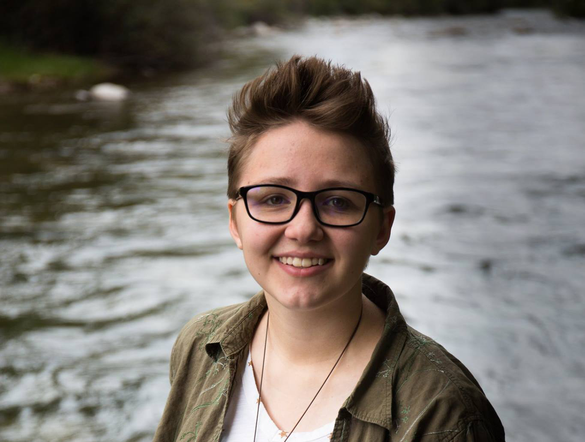

Abigail Rictor
Abigail Rictor

Information
Gender
Female
Other names
Abby
Date of birth
June 19, 1998
Occupation
Student
Pets
Rey
Likes
Fish
Dislikes
Chip dip
Overview of Life
Abby Rictor was born and raised in Centennial, Colorado, and grew up with her parents and her brother. At Franklin Elementary School in the third grade, Abby met Giovanna, and from then on they were best friends. Despite Abby and Giovanna going to different middle schools (Abby went to Euclid, Giovanna to Powell), their friendship remained strong throughout it and they were able to rejoin at Arapahoe high school, where they both went.
During high school, Abby joined Drama Club for the first two years, eventually switching over to the club MUSE, which was the school’s literary magazine. She became the poetry editor by the end of her four years in high school. Like Giovanna, she also took many art classes, and enjoyed every one, but what really interested her was a new Computer Science class. After taking the class, she realized that she wanted to major in it, much like both of her parents had.
When entering into college, Abby and Giovanna chose to room together, as they had both chosen Colorado State University as their school of choice. Abby joined the club ACMW (a club for women in STEM majors) almost immediately, and thrived because of it. She gained a lot of new friends and met a lot of new and interesting people. Abby has also been very successful in her major, having taken on many internships and created some truly amazing projects that involve computer science.
During high school, Abby joined Drama Club for the first two years, eventually switching over to the club MUSE, which was the school’s literary magazine. She became the poetry editor by the end of her four years in high school. Like Giovanna, she also took many art classes, and enjoyed every one, but what really interested her was a new Computer Science class. After taking the class, she realized that she wanted to major in it, much like both of her parents had.
When entering into college, Abby and Giovanna chose to room together, as they had both chosen Colorado State University as their school of choice. Abby joined the club ACMW (a club for women in STEM majors) almost immediately, and thrived because of it. She gained a lot of new friends and met a lot of new and interesting people. Abby has also been very successful in her major, having taken on many internships and created some truly amazing projects that involve computer science.
◦ Abby's middle name is Marie.
◦ Abby is really into fish keeping and has been since Senior year of high school.
◦ Giovanna and Abby like to read the same books so they can talk about them together.
◦ Abby's a vegetarian, and loves veggie burgers.
◦ Abby and Giovanna disagree about which Shrek movie is the best one.
◦ Abby is really into fish keeping and has been since Senior year of high school.
◦ Giovanna and Abby like to read the same books so they can talk about them together.
◦ Abby's a vegetarian, and loves veggie burgers.
◦ Abby and Giovanna disagree about which Shrek movie is the best one.